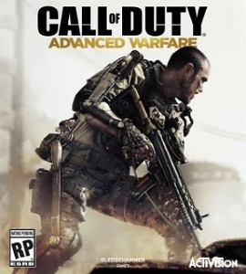
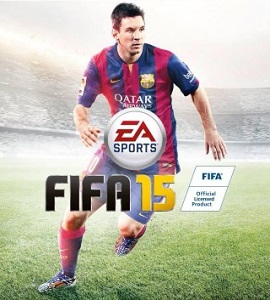
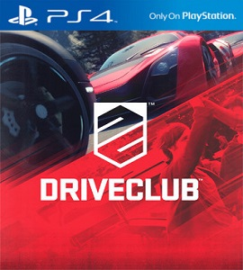
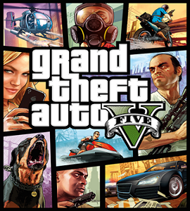
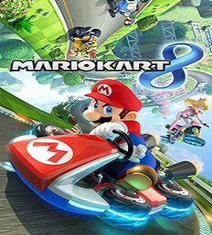
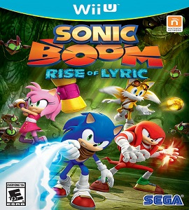
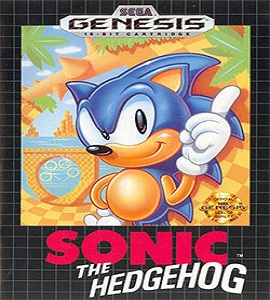
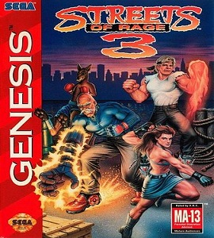
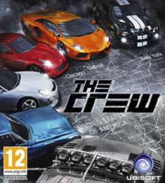
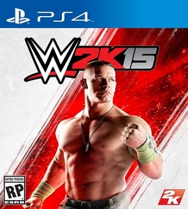

| Game |
Description |
Console |
|  |
Call of Duty: Advanced Warfare is a first-person shooter video game developed by Sledgehammer Games and published by Activision. It was released on November 4, 2014 for Microsoft Windows, PlayStation 3, PlayStation 4, Xbox 360 and Xbox One The game is the first main entry in the Call of Duty series since 2013's Call of Duty: Ghosts.
The single-player story follows Jack Mitchell, a private in the United States Marine Corps. Development began in 2011, soon after the release of Call of Duty: Modern Warfare. Sledgehammer engaged veteran actors, such as Troy Baker and Kevin Spacey, to perform in the game's lead roles.Advanced Warfare, like the other Call of Duty titles, is presented in a first-person shooter perspective. However, the game features several changes; unlike other installments, Advanced Warfare does not use a traditional heads-up display; instead, all information is relayed to the player via holographic projections from the weapon equipped. The general gun-play remains unchanged, apart from new mechanics; for example, certain guns will be able to recharge slowly. The player can also switch between different types of grenades. The game will also be the first in the Call of Duty series that will allow the player to choose differing types of conventional weaponry; for example, the game will feature regular conventional firearms, but the player can also choose to use Laser or Energy directed weaponry, both of which have differing attributes. |
Playstation 4/Playstation 3/XBOX 360/Xbox One |
|  |
FIFA 15 is an association football simulation video game developed by EA Canada and published by Electronic Arts. It was released on 23 September 2014 in North America, 25 September in Europe and 26 September in the United Kingdom and Ireland for the PlayStation 3, PlayStation 4, PlayStation Vita, Nintendo 3DS, Wii, Xbox One, Xbox 360, Microsoft Windows, iOS, Android and Windows Phone. On PC, FIFA 15 runs on EA's Ignite engine with the same features as the PS4 and Xbox One editions.
The game features Lionel Messi on its cover, alongside a different player in different parts of the world, and is the first game in the FIFA series to be fully licensed by the Premier League. FIFA 15 received positive reviews across all platforms, although the PC version in particular was criticised for the amount of bugs that was featured at release.This year's Ultimate Team features a new feature, in which users can sign loan players for a limited duration of matches. Another new feature is The Concept Squad, where players have an access to the game's database and can create a "dream squad". The concept player's card is grey colored. A number of new legends are also introduced to the game, including Franz Beckenbauer, Roberto Carlos, Peter Schmeichel and Hristo Stoichkov. |
Playstation 4/Playstation 3/XBOX 360/Xbox One |
|  |
Driveclub (stylised as DRIVECLUB) is a 2014 racing video game for the PlayStation 4, developed by Evolution Studios and published by Sony Computer Entertainment. Driveclub was officially announced during the PlayStation 4 press conference on 20 February 2013.The game was released in October 2014.In Europe, the game is also available with the PlayStation 4 in two different bundles: one with the white version of the console, the other with the black version.
Driveclub differs from Evolution Studios previous racing franchise, MotorStorm, in that it focuses on road racing rather than off-road racing. As the name Driveclub suggests, players are able to make clubs of up to 6 players and complete challenges together to earn fame (a basic form of currency in the game). Every team member's action contributes to the club's overall success. The game's tracks and environments are inspired by real places in diverse regions across the globe. Driveclub also features dynamic weather such as rain and snow, and a day-night cycle.
There are three main game modes in Driveclub; tour, single event and multiplayer. In tour, you complete single player events set in various locations using the allocated cars. A set of objectives are also present and can be tackled during the events. In the single event game mode, players choose what event they would like to play (drift, race or time-trial) and have the freedom to select the location, weather and other options. Finally, the multiplayer game mode revolves around competition and co-operation with real life players. Players can complete challenges with social leaderboards, create clubs and play online races.
In early September 2014, Evolution Studios announced a DLC Season Pass. The pass will introduce 11 new courses, 23 new events, and a new car every month until June 2015. The DLC will be both paid, and free. |
Playstation 4 |
|  |
Grand Theft Auto V is an open world, action-adventure video game developed by Rockstar North and published by Rockstar Games. It was released on 17 September 2013 for the PlayStation 3 and Xbox 360, and on 18 November 2014 for the PlayStation 4 and Xbox One. It is scheduled to be released on 27 January 2015 for Microsoft Windows. The game is the first main entry in the Grand Theft Auto series since 2008's Grand Theft Auto IV. Set within the fictional state of San Andreas (based on Southern California), the single-player story follows three criminals and their efforts to commit heists while under pressure from a government agency. The open world design lets players freely roam San Andreas, which includes open countryside and the fictional city of Los Santos (based on Los Angeles).
The game is played from either a first-person or third-person view and its world is navigated on foot or by vehicle. Players control the three lead protagonists throughout the single-player mode, switching between them both during and outside of missions. The story is centred on the heist sequences, and many of the missions involve shooting and driving gameplay. Players who commit crimes may incite a response from law enforcement agencies, measured by a "wanted" system that governs the aggression of their response. Grand Theft Auto Online, the online multiplayer mode, lets up to 30 players explore the open world and engage in cooperative or competitive game matches.
Development began in 2009, soon after the release of Grand Theft Auto IV. The development team envisioned Grand Theft Auto V as a spiritual successor to many of their previous projects, such as Red Dead Redemption and Max Payne 3. The game's use of three lead protagonists is a break from series tradition design choice from the developers to innovate on the core structure of its predecessors. As part of their research for the open world, the developers conducted field research around California throughout development and captured footage for the design team. Development duties were shared between many of Rockstar's studios worldwide.
Following its announcement in October 2011, Grand Theft Auto V was widely anticipated. It was acclaimed by many reviewers, with praise particularly directed at its multiple protagonist design, open-ended gameplay and technical advancements. Critics were polarised by a scene depicting torture and the game's treatment of women. Some labelled the game inherently violent and misogynistic. Grand Theft Auto V broke industry sales records and became the fastest-selling entertainment product in history, earning US $800 million in its first day and US $1 billion in its first three days. Considered one of the most significant titles of the seventh generation of video games, and by many critics as one of the greatest video games of all time, it won year-end accolades, including Game of the Year awards from several gaming publications. |
Playstation 4/Playstation 3/XBOX 360/Xbox One |
|  |
Mario Kart 8 is a 2014 kart racing game and the eighth major installment in the Mario Kart series, developed and published by Nintendo for the Wii U video game console. First announced at E3 2013, the game was released worldwide in May 2014.
Like other games in the series, in Mario Kart 8 players control characters from the Mario franchise and participate in kart racing on various race tracks, using items to hinder opponents or gain advantages. While incorporating game mechanics originally featured in earlier Mario Kart games, Mario Kart 8 introduces anti-gravity sections that allow players to drive on walls or ceilings. The game features multiple single-player and multiplayer game modes. The game incorporates Miiverse functionality and online multiplayer supported via Nintendo Network.
Mario Kart 8 was a critical and commercial success upon its release, currently holding aggregate critical scores of 88.52% and 88% on GameRankings and Metacritic, respectively. It is the fastest selling Wii U game as of June 30, 2014, with 1.2 million copies sold within the first four days of its release and 2.82 million copies during its first month.[3] The game has continued to receive post-release patches and downloadable content, including additional characters, vehicles, and tracks, and support for Nintendo's Amiibo line of figurines.The game continues the traditional gameplay of the franchise, in which characters from the Mario universe race against each other in go-karts, attempting to hinder their opponents or improve their racing performance using various tools found in item boxes. Returning features from previous installments include motorbikes and 12-player racing from Mario Kart Wii, as well as hang gliders, underwater racing, and vehicle customization from Mario Kart 7.
Mario Kart 8'?s new features include anti-gravity racing, in which certain parts of a track can allow racers to drive on walls and ceilings.[4] During these sections, players can bump into other racers or special bumpers to trigger a Spin Boost, which gives them an extra speed boost. New characters include the Koopalings, Baby Rosalina, and Pink Gold Peach. New items include the Boomerang Flower, which can be thrown to attack players, the Piranha Plant, which attacks nearby racers and obstacles, the Crazy Eight, which gives the user eight items, and the Super Horn, which can be used both to attack nearby opponents and defend against items, including the previously near unavoidable blue Spiny Shell. |
Nintendo WII |
|  |
Sonic Boom: Rise of Lyric, is a 2014 action-adventure video game published by Sega and developed by Big Red Button for the Wii U console along with Sonic Boom: Shattered Crystal for the Nintendo 3DS, the game is a spin-off of Sega's Sonic the Hedgehog series and is a part of the new Sonic Boom franchise, which consists also of an animated television series, whose games serve as prequel, a comic series by Archie Comics, and a toyline by Tomy. The two games together formed the third and final part in Sega's exclusivity agreement with Nintendo, following Sonic Lost World and Mario & Sonic at the Sochi 2014 Olympic Winter Games in 2013. Both games were released on November 11, 2014 in North America, November 21 in Europe,[5] and will be released on December 18, 2014 in Japan.
Upon release, the game received negative reviews from critics, deriding the numerous glitches and bugs, camera system, poor controls, uninspired combat system, dialogue and character development. Rise of Lyric is the lowest scoring game in the entire series, and is also considered as one of the worst video games ever made.Sonic Boom: Rise of Lyric follows Sonic the Hedgehog and his friends Miles "Tails" Prower, Knuckles the Echidna and Amy Rose, as they battle against the evil Dr. Eggman. The group arrives on an island and encounter an ancient tomb sealed deep within. There, they come across a powerful snake-like villain from a race called the Ancients, named Lyric. The group finds that Lyric plans to power his army of war mongering robots with the Chaos Crystals in order to destroy everything organic and create a world of twisted metal and robots. To stop Lyric's evil plan, the group must put aside their differences and find the Chaos Crystals before Lyric. |
Nintendo WII |
|  |
Sonic the Hedgehog is a platform video game developed by Sonic Team and published by Sega for the Sega Genesis/Mega Drive. It was released in North America, Europe, and Australia on June 23, 1991 and in Japan on July 26. The game stars the character Sonic the Hedgehog in his quest to defeat the antagonist, an evil scientist named Dr. Robotnik who has imprisoned animals inside robots and stolen the magical Chaos Emeralds. The gameplay involves collecting rings as a form of health and a simple control scheme in which jumping and attacking are controlled by one button.
The game's development began in 1990, when Sega ordered its AM8 development team to create a game featuring a mascot for the company. After a variety of suggestions, the developers decided on a blue hedgehog with spikes along his head and spine, and they renamed themselves "Sonic Team" to match the character's name. The game was designed with a fast gameplay style in mind and was influenced by the games of Shigeru Miyamoto. It uses novel physics techniques allowing Sonic's sprite to roll along curved scenery, which originated in a tech demo created by Yuji Naka. The soundtrack was composed by Masato Nakamura.
Sonic the Hedgehog was very well received by critics, who praised the game's visuals and its sense of speed. It was also a commercial success, establishing the Genesis as a key player in the 16-bit era and allowing it to compete with Nintendo and their Super Nintendo console. It has been ported numerous times. The game also spawned numerous clones, as well as a long-lasting and successful video game series beginning with a sequel, Sonic the Hedgehog 2 and adaptations into other media.In an attempt to steal the six Chaos Emeralds and harness their power, the game's antagonist Dr. Ivo Robotnik (named "Dr. Eggman" in the Japanese release) has trapped the animal inhabitants of South Island inside aggressive robots and stationary metal capsules. The player controls the titular Sonic the Hedgehog, who aims to stop Robotnik's plans by freeing his animal friends and collecting all of the Chaos Emeralds himself.[5] If the player collects all the Chaos Emeralds and completes the game, the optimal ending sequence is shown. However, if not every Chaos Emerald is collected, a screen shows Robotnik taunting the player. |
Sega Mega Drive |
|  |
Streets of Rage 3, known in Japan as Bare Knuckle III in pre-release media and the official soundtrack release, is a side-scrolling beat 'em up released by Sega in 1994 for the Sega Mega Drive/Genesis. It is the last part of the Streets of Rage series. It was later released for the Japanese version of Sonic Gems Collection for the Nintendo GameCube and PlayStation 2, and for the Wii Virtual Console on September 24, 2007. The game also appeared in Sonic's Ultimate Genesis Collection for Xbox 360 and PlayStation 3.
The game had featured several enhancements over Streets of Rage and Streets of Rage 2 such as a more complex plot, multiple endings, longer levels, increased difficulty, more in-depth scenarios (with interactive levels and the return of traps like pits) and faster gameplay (with dash and dodge moves). Weapons could now only be used for a few times before breaking and could now be integrated with unique moves with certain characters, hidden characters were added and a few cutscenes were included to give the story greater depth.After being defeated twice, Syndicate crime boss Mr. X has started a research company called RoboCy Corporation to act as a cover for his illegal activities. The world's best roboticist, Dr. Dahm, has been brought in to help him create an army of realistic robots to replace important officials from the city. With the replacements in place, Mr. X plans to run the city using a remote control device. His criminal organization, The Syndicate, has strategically placed bombs around the city to distract the police while the city officials are dealt with.
Dr. Zan discovers what the research is really for and knows the Syndicate must be stopped. He contacts Blaze Fielding with the details of The Syndicate's plan. Blaze quickly contacts her old comrades Axel Stone and Adam Hunter for a task force to bring down The Syndicate once and for all. Axel quickly joins the task force, but Adam can't make it (due to his own assignments from within the police) and sends his young brother, Eddie "Skate" Hunter instead. The game has four endings depending on the difficulty level and if the player defeats certain levels in an alloted amount of time.
Good ending: The player has completed the game in Normal or Hard mode, rescued the Chief of Police and defeated Robot Y before the time limit expires. The Syndicate headquarters are about to explode, but Adam manages to rescue his companions in his helicopter. The headquarters explode, and an image of the four characters looking happily at the saved city on a blue background appears, with an upward text relating the officers' rescue and the deactivating of the bombs, as well as the fact Dr. Dahm is being rehabilitated in a psychiatric hospital. Meanwhile, the characters have their own separate ways, as depicted on the background pictures in the credits. After the credits, an image of the gang watching the sunset with Adam and Max is shown, with the message "THE END" below. |
Sega Mega Drive |
|  |
The Crew is an open and persistent world for racing across the United States.It takes an hour and a half to drive from coast to coast in-game.The single-player campaign is 20 hours long, and entails infiltrating criminal groups with protagonist Alex Taylor (Troy Baker).Players can also participate in mini-games called skills that are peppered across the world. They are triggered when a player drives through them and it involves completing challenges such as weaving through gates and staying as close to a racing line for a period of time. Players' scores are automatically saved so friends can try and beat their scores, in similar fashion to how Autolog works in games of the Need for Speed franchise. Missions can be played alone, with friends, or with online co-op matchmaking.The multiplayer mode lets a maximum of eight players to compete in races and other gametypes. There are no in-game loading screens or pauses. Players can also build cars with a tie-in app for iOS and Android.
The Crew creative director Julian Gerighty has called the game a role-playing game with large-scale multiplayer elements. The multiplayer is not separate from the single-player.Players can form "crews" to race together or against ghost records.
Though the player can play alone, the game will require an internet connection to play and opened in another window, in a very similar way to another of Ubisoft's upcoming titles The Division. |
Playstation 4/XBOX One |
|  |
WWE 2K15 is meant to signify the start of a new generation, turning the franchise into a true wrestling game rather than "a fighting game with WWE Superstars in it." A new chain wrestling mini-game has been implemented (exclusive to current generation consoles only) to make matches play out more realistically. Pressing the grapple button at the beginning of the match will initiate a collar-and-elbow tie up. From there, each opponent will press one of three face buttons to place their opponent into a side headlock, a wrist lock or a waist lock with a rock-paper-scissors style outcome. (Headlock beats Wrist lock, Wrist lock beats Waist lock, Waist lock beats Headlock.) Whomever wins will place their opponent in the corresponding hold while both players rotate the right analog stick to find a "sweet spot". If the attacker finds it first, they'll perform a move, if the defender finds it first, they'll gain the upper hand. Additionally, the attacking wrestler can strike or wrench the opponent's limb, making it harder for them to find the sweet spot. This mini-game only happens 2-3 times during the match and can be turned off via the options menu. Strikes have returned to their normal speed with improved collision and selling animations from the opponent. Unlike in previous games, superstars will not stand up immediately after taking a bump or slam.
Also new to the series is a three-tier stamina meter which controls the pace of a match. Each move that is performed, especially striking and running, will drain the stamina meter. During the first tier, the wrestler will be full of energy and perform moves easily. During the second tier, the wrestler will begin to slow down. In the third tier, the wrestler will be completely exhausted, even being unable to perform their finishing moves should it drop too low. The stamina meter can also be turned off or adjusted to drain more slowly, and will slowly regenerate as long as a meter is not depleted. The game's submission system has been revamped. The "Breaking Point" gauge has been replaced with a two part circular gauge. The mechanic of the system remains mostly the same, but players only have to mash a single button rather than all four. Wake-up taunt finishers are now known as "Charged Finishers" which combines the taunt & finisher into a single animation by pressing and holding the finisher button when the opponent is grounded and then releasing it when they're on their feet. Signature moves can now be stored as well. Catch and Catapult finishers have also returned. Both fighting styles and skill sets have been brought in to ensure that the characters behave more like their real-life counterparts. For example, high flyers like Rey Mysterio will not do power moves and will focus on diving and springboard moves while giants like Big Show cannot climb the turnbuckle and will focus on power moves. Superstars who cannot climb to the top rope can climb to the second rope and deliver moves such as Bret Hart's elbow drop or Big Show's slingshot body splash. |
Playstation 4/Playstation 3/XBOX 360/Xbox One |